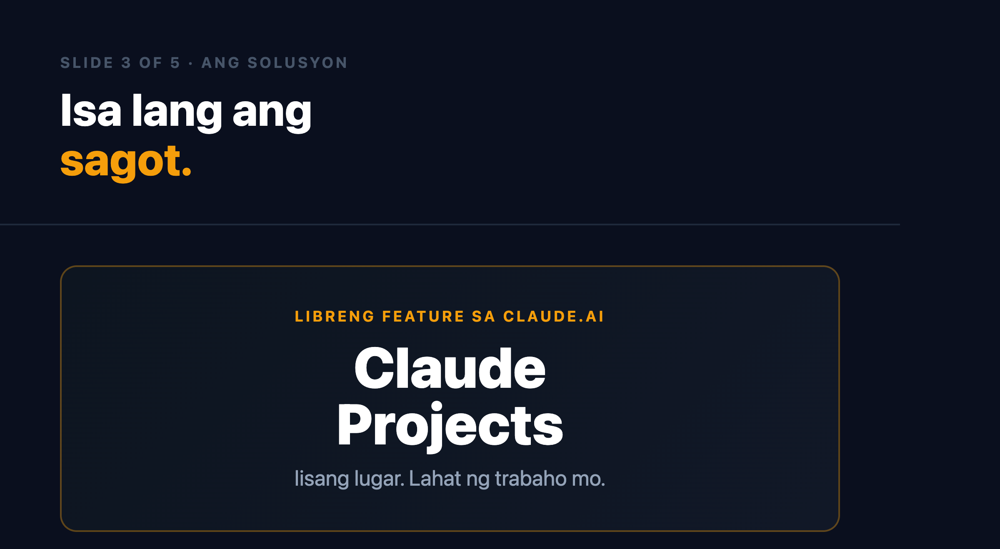
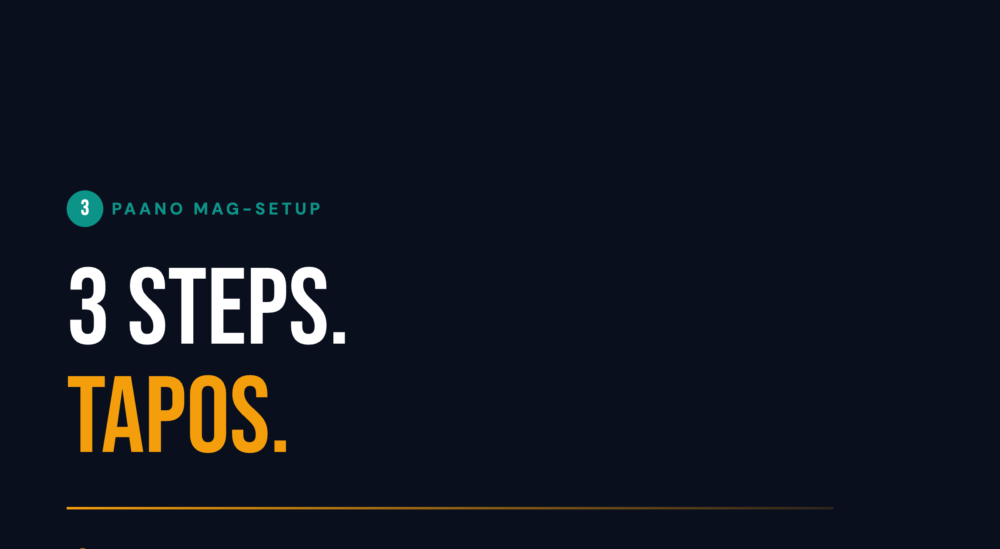
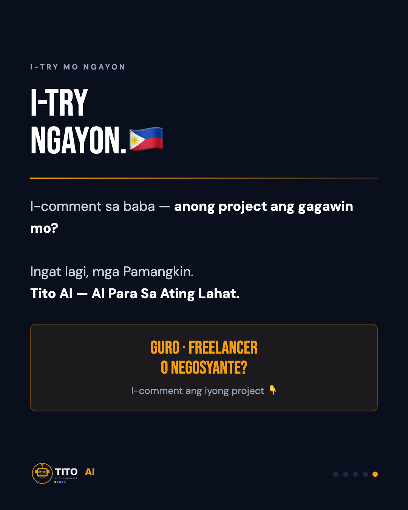

📌 POSTING INSIGHTS — FROM JUL 1 ENGAGEMENT AUDIT
Post once, pin immediately. Every top-3 TikTok post is a pinned post, beating its own unpinned duplicate 2–4x. Do not post this script twice — pin it on TikTok right after it goes live.
Best-performing shape. This is a named-persona, step-by-step free-tool demo — same shape as the "Mga Guro" post (784 views TikTok / 297–304 IG, our top organic performer). Recommend the Php 2,000 W27 boost goes here, not the Friday carousel.
⚠ Video length flag. Final edit runs 2:11 (131s, 202MB) — ~45s over the 85–90s script target and over the brand's 60–90s ceiling. Pending Jeff's call: post as exception or trim before packaging.
Best-performing shape. This is a named-persona, step-by-step free-tool demo — same shape as the "Mga Guro" post (784 views TikTok / 297–304 IG, our top organic performer). Recommend the Php 2,000 W27 boost goes here, not the Friday carousel.
⚠ Video length flag. Final edit runs 2:11 (131s, 202MB) — ~45s over the 85–90s script target and over the brand's 60–90s ceiling. Pending Jeff's call: post as exception or trim before packaging.
Captions
TikTok · @tito.aiph8 hashtags
Gaano katagal mo na inuulit ang context sa bawat bagong Claude chat?
Tapos na iyon. Ituturo ko sa iyo kung paano mag-setup ng Claude Project — iisa lang ang lugar para sa lahat ng iyong trabaho, naalala ni Claude ang lahat.
Libre sa claude.ai. Tapos na tayo sa 90 segundo. 🇵🇭
I-comment: Anong project ang gagawin mo?
Instagram · @tito.aiph15 hashtags
Gaano katagal mo na inuulit ang context sa bawat bagong Claude chat?
"Ikaw ay assistant ko para sa negosyo ko..."
"Ang mga estudyante ko ay nasa Grade 4..."
"Ikaw ay tumutulong sa aking freelance writing..."
May solusyon na. Libreng solusyon.
Sa Claude Projects — iisa lang ang lugar para sa lahat ng iyong trabaho:
✅ Saved instructions (hindi mo na kailangang i-explain ulit)
✅ Uploaded files (nandoon lagi)
✅ Full chat history (bumalik ka kahit kailan)
Sa video na ito: live demo ng Claude Projects setup para sa isang guro. Pero ang pattern — para sa lahat. Guro, freelancer, negosyante.
Libre sa claude.ai → Projects → New Project.
I-comment sa baba: Anong project ang unang gagawin mo? 👇🇵🇭
Facebook · Tito AI Page6 hashtags
Mga Pamangkin — may isa akong gustong ituro sa inyo ngayong Miyerkules.
Kung gumagamit kayo ng Claude at paulit-ulit kayong nag-e-explain ng context sa bawat bagong chat — mayroon na tayong solusyon. At libre ito.
Tinatawag itong Claude Projects.
Sa Projects, mayroon kang iisang lugar para sa lahat ng trabaho mo sa Claude:
— Saved instructions (hindi na kailangang ulitin)
— Uploaded files (nandoon palagi)
— Buong chat history (bumalik ka kahit kailan)
Sa video na ito, ipinapakita ko ang setup para sa isang guro — ngunit ang pattern ay para sa lahat.
Guro: isa lang ang project para sa lahat ng iyong lesson plans.
Freelancer: isa lang ang project para sa bawat kliyente.
Negosyante: isa lang ang project para sa iyong negosyo.
Libre ito sa claude.ai → Projects → New Project.
I-comment sa baba: Anong project ang unang gagawin ninyo? 🇵🇭
Carousel Slides (5)



Canva — Carousel Design5 slides · 1080×1350 · W27 Wed
Edit in Canva →
Full Script85–90s · Split screen demo · claude.ai Projects
View Script →